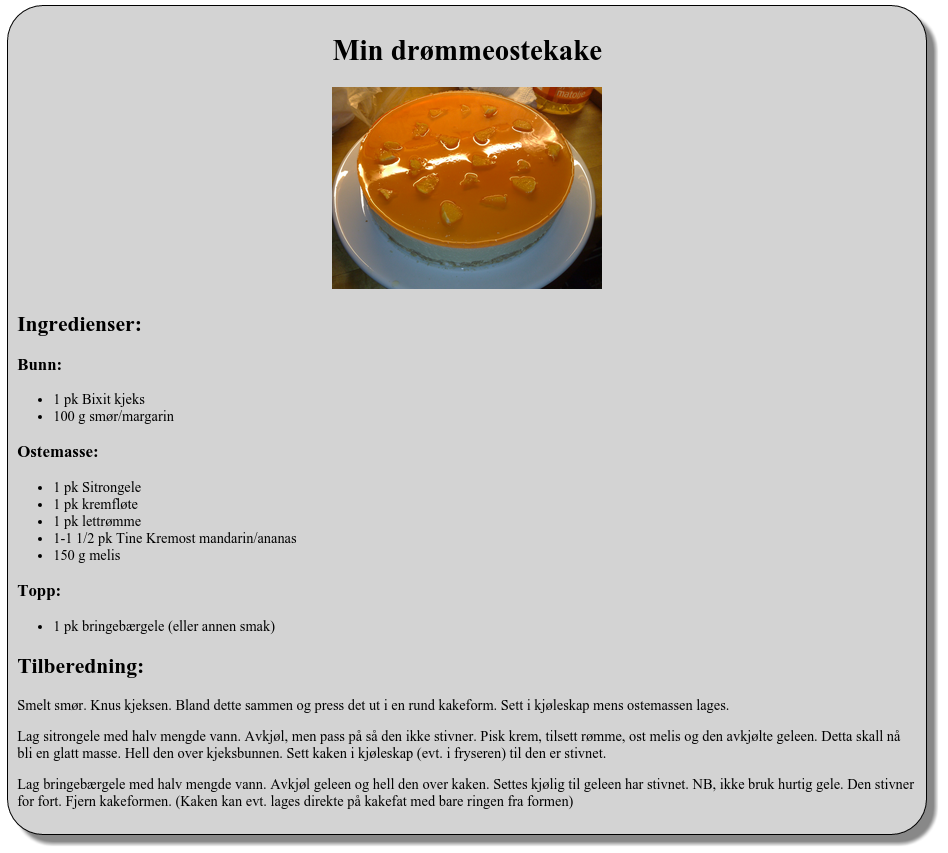
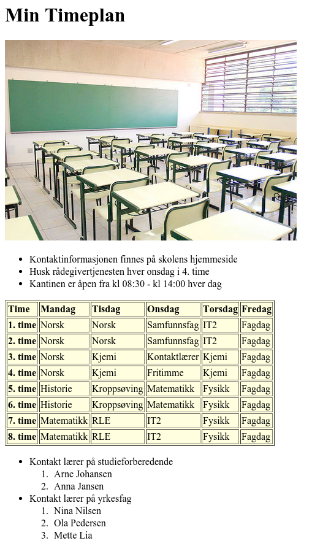

Før dere setter igang med oppgaver kan det være lurt å legge inn automagisk start av en html side i sublime-text editorn.
Hallo verden er en vanlig måte å teste ut ny teknologi på. I denne oppgaven skal du lage ditt første html-hallo-verden-program.
Figure 3: Hello world! Hentet fra flickr
Du skal lage siden index.html, som lagres i en egen mappe. Her skal
du bruke så mye av det du har lært fra første avsnittet. Tittelen på
siden skal være "Hallo verden!". Innholdet bestemmer du selv. Husk å
lage oppgaven i en egen mappe.
Lag filen index.html i din favoritteditor, og lagre i egen
mappe. Denne filen skal inneholde HTML-kode som lager siden vist under
når du åpner den i en nettleser.

Bilden i oppgaven: Orange_cheesecake.jpg
Oppgaven er lisensiert under en Creative Commons Navngivelse-DelPåSammeVilkår 4.0 Internasjonal lisens.
Slike oppgaver kan løses på mange måter. Vi steber etter enkel men lesbar kode.
width til img taggen for å kontrollere størrelsen på bilden.
<div> elementet for å ramme in reseptet og se på example:Lekmeddiv.
Det er skolestart, og du skal lage en timeplan i html. Lag timeplanen på bildet under. Bildet kan du hente fra commons.wikimedia.org. Husk å lagre oppgaven i egen mappe. Legg også bildet i en egen mappe med navn "bilder".
